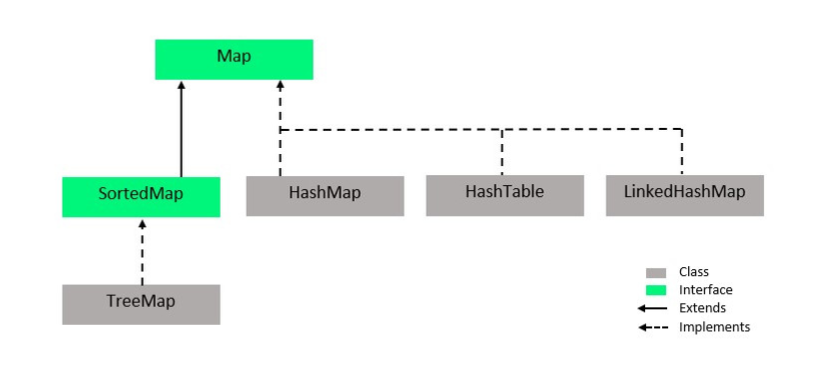
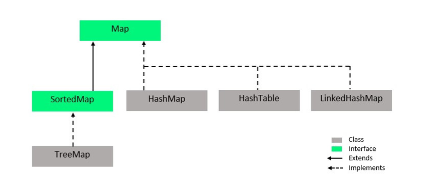

Antra Training Concepts
static block?
singleton vs immutable class
abstract: class, method
final: class, method, variable
static: inner class, method, variable
jvm:
method area(after java 8, meta space): static, class template
heap: objects
vm stack: references and method
native(c/c++) method stack: old api within jam
jconsole
IntelliJ profiler
java flight recorder(since java 11 is free)
spring actuator
ArrayList<? extends Staff> list = new ArrayList();
confluence page->
service 00
-> 000
bytestream(8 bits), characterstream(16 bits)
fileinputstream
fileread
lambda function type name
functional interface with static
virtual thread !!!!! loom project
persons.stream(); vs persons.parallelStream();
method reference
traditional thread: use thread pool
thread pool vs virtual thread
threadFactory
synchronized method
synchronized static method
callable futureTask.get block the thread vs completableFuture
volatile : 2:38 visibility only not thread safety
CAS
is that necessary to set accessible back to false for those private members
//////////////////
osi model, 7 layers vs tcp/ip model
200 1 2 4
307 8
400 1 3 4
500
session/ cookies
sticky session, weighted/ round robin
/// day 2
- Bean scope
- singleton(default)
- prototype
- request
- session
- application
- websocket
- types of DI(pros and cons)
- constructor based DI
- settrer based DI
- filed based DI
- Bean Life Cycle
-
/// day 3
- AOP
- Aspect
- Advice
- Joinpoint
- Pointcut
- Target
- AOP usages:
- crud operation(get, put, delete, post)
- method special
@ABC
method_special();
- ...
- Spring MVC
- explain the work flow
- Springboot
- pros: autoconfigration, Java is passed by Value or Reference?
- In Java, there are two kinds of data type, Primitive data types and Non-primitive data types.
- For primitive types, they are built-in data types in Java including int/short/long/float/double/char/byte/boolean. They are all passed by value.
- For non-primitive types, they are also passed by value, the value here is actually the memory address of the object. e.g. annotation, class, interface, enum, array.
- In conclusion all data types in Java are passed by value.
static keyword
Hashmap workflow
- Internally, Hashmap is an array of linkedList.
How many access modifiers?
- public: visible in all classes in all packages
- protected: visible to all classes in the same package or classes in other packages that are a subclass
- default: visible to all classes in the same package
- private: visible only in the same class
Pros and Cons of static
Diff map and set. Can we have duplicate keys in map
Given a series data, how to detect duplicate data and skip it?
Comparable vs Comparator
- First, they are both functional interface, annotated with
@FunctionalInterface- Comparable has one method
compareTo - Comparator has one method
compare
- Comparable has one method
- Comparable is used to define the natural ordering of objects within the class itself.
- Comparator is used for external comparison logic.
How GC works / GC generation
-
When Java programs run on the JVM, objects are created on the heap, which is a portion of memory dedicated to the program. Eventually, some objects will no longer be needed. The garbage collector finds these unused objects and deletes them to free up memory.
-
A generational garbage collector collects the short-lived objects more frequently than the longer lived ones. Short-lived objects are stored in the first generation, generation 0. The longer-lived objects are pushed into the higher generations, 1 or 2. The garbage collector works more frequently in the lower generations than in the higher ones.
-
When an object is first created, it is put into generation 0. When the generation 0 is filled up, the garbage collector is invoked. The objects that survive the garbage collection in the first generation are promoted onto the next higher generation, generation 1. The objects that survive garbage collection in generation 1 are promoted onto the next and the highest generation, generation 2. This algorithm works efficiently for garbage collection of objects, as it is fast.
Generics in Java, what is it, why we need it?
Type erasing in Java, about generics
what/why generic
How to handle exceptions
Checked vs Unchecked exception
Threadpool 的 coding
Multi-threading concepts and coding
abstract, final, static
abstract: class, method
final: class, method, variable
static: inner class, method, variable, static blocksingleton vs immutable class
JVM
- method area(after java 8, meta space): static, class template
- heap: objects
- vm stack: references and method
- native(c/c++) method stack: old api within jam
ClassLoader
- Three types of classLoader
- Bootstrap ClassLoader: to load the first pure java ClassLoader
- Extension ClassLoader: to load extensions of core java from jdk extension library
- System/Application ClassLoader: to load application type classes
Class class
- It is used to describe the meta info inside a class.
- When a class is loaded from ClassLoader, one object of Class class will be created.
- With that object, we can call
getClass()method or.classfield to get the instance of the Class class.
Reflection API
- Give us the ability that during the runtime, we can inspect and modify classes, methods, and fields dynamically.
- It’s not necessary to know everything about an object or class at compile time, instead we can discover them during the runtime.
- Reflection API is powerful, but there are some performance considerations. Generally speaking, it’s slower than direct method calls, because it has overhead involves runtime type checking and method invocations. So in some performance-critical scenarios, we should not use Reflection API.
Data Structures
- Map is not in Collection framework. That’s why we cannot directly iterate key-value pairs within any Map implementation.
Collection vs Collections
- Collection framework is for data structures.
- Collections is a class. That class contains lots of static methods including reverse/sort. That can help us manipulate our data structures including arrays.
Comparison between any pair of data structures
 

Java Flight Recorder
-
It’s a place that we can monitor our Java application. To check if there is any bottleneck for our web application regarding to the hardware and resources.
-
Java Flight Recorder(since java 11 is free)
-
jconsole
-
IntelliJ profiler
-
Spring Actuator
Generic Data type
- Why: it gives us the ability that to make classes and methods more flexible and reusable by allowing them to operate on various types. It also provides compile-time type safety.
- How:
- type bounds: there are two types of bounds: upper bound(
extends, <), lower bound(super, >=) - wildcard generics: it has greater flexibility, and it can also be bounded with those extends and super keyword.
- type bounds: there are two types of bounds: upper bound(
Design Patterns
Singleton
- reference
- there is only one object we can create from the class.
- pros:
- singleton can work like a global variable
- cons:
- it’s hard to do a unit test.
- it needs special treatment in multi-threading programming
Simple Factory
- reference
- there is a creation method with some parameters. with those parameters we can choose which class to use for instantiating the object.
- pros:
- it makes the code loosely coupled.
- cons:
- over time, the methods might become too big. in this case, we need to convert the simple factory design pattern into Factory Method, to introduce some subclasses to handle this situation.
Builder
- is used to simplify the process of building a complex object.
- pros:
- we can construct object step by step, and reuse the construction codes.
- cons:
- it would have many extra codes like having many extra classes and methods
Builder vs Factory
- Factory design pattern hides the process of object creation. Users just ask for what they need.
- Builder design pattern allow users to know what is set for the object.
Proxy
- In practice, the proxy has the same interface as a service, which makes it interchangeable with a real object when passed to a client.
- There are two types of proxy: the static proxy and the dynamic proxy.
- The static proxy requires developer to know the target class in advance, whereas the dynamic proxy doesn’t, because the proxy class can be dynamically created by JVM during the runtime.
OSI model vs TCP/IP model(won’t be asked during the interview)
OSI model
- 7 layers architecture: Physical / Data Link / Network / Transport / Session / Presentation / Application
- a typical modern network architecture
- As a developer, we will only focus on the top layer called Application Layer
- including HTTP, FTP, SSH, DNS, etc.
TCP/IP model
- a simplified version network architecture
- 4 layers architecture: Network Access Layer[1,2] / Network / Transport / Application[5,6,7]
TCP, UDP within Transport Layer
-
divides the data in to many packets
-
within the packet of TCP, has
Sequence Number -
within the packet of UDP, no
Sequence Number -
TCP is more secure, i.e. email
-
UDP is faster, i.e. zoom meeting
-
TCP 4 way handshake process is more secure than 3 way handshake process
HTTP
-
a protocol in the Application Layer
-
HTTP Request
- Request Message Header
- Request Line
- http methods(get, post, …)
- file address
- http version
- Request Headers
- some key-value pairs
- Request Line
- a blank line
- Request Message Body(normally is a json file, but can be anything)
- Request Message Header
-
HTTP Response
- Response Message Header
- Status Line
- http version
- http status code
- Response Headers
- some key-value pairs
- Status Line
- a blank line
- Response Message Body(normally is a json file, but can be anything)
- Response Message Header
HTTP methods
- Safe: the http method does not change the state of the server, does not changing on the server side.
- Indempotent: two or more same requests are made to backend, and it will have the same effect.
- Cacheable: the browser caches some data for some http methods by default. (we can setup with
cache-control)
| Methods | Safe | Indempotent | Cacheable | Description |
|---|---|---|---|---|
| Get | yes | yes | yes | read |
| Put | no | yes | no | whole update |
| Post | no | no | no | create |
| Delete | no | yes | no | remove |
| Patch | no | no(or yes) | no | patch update |
| headoptions/ trace/ connect |
HTTP status codes
- 1xx: informational codes
- 2xx: success codes
- 3xx: redirection codes
- 4xx: client error codes
- 5xx: server error codes
200 OK -- the request has been successfully sent to the backend.
201 Created -- a new resource was created as a result.
202 Accepted -- the request has been accepted for processing, but the processing has not been completed.
204 No Content -- the request succeeded, but that the client doesn't need to navigate away from its current page. i.e. submitted some data with put method, the frontend doesn't need to be changed.
307 Temporary Redirect -- i.e. the primary website doesn't work due to some bug or maintenance, we need to redirect to backup server.
308 Permanent Redirect -- i.e. sometimes the old URL won't use anymore, we wanna keep our customers.
400 Bad Request -- the server cannot understand the request, because some invalid syntax or invalid parameters.
401 Unauthorized -- the request has not been completed because it lacks valid authentication credentials.
403 Forbidden -- the server understands the request but refuses to authorize it.
404 Not Found -- the server cannot find the requested resource.
500 Internal Server Error -- the server has encountered a situation it does not know how to handle.Session and Cookies (won’t be asked during the interview)
- Cookies is a piece of data stored on the browser on the client side.
- Every session has sessionID stored on the server side, is used to store some user info.
- Cookies is generated by the session, all the requests and responses will take Cookies.
Java Web Architecture
- Web Components(servlet, JSP): a unit can handle specific logic.

Backend Web Server/Container
Web server is software. Server is hardware. Web server is running on the server to host the Application to handle the request.
- Tomcat
- JBoss
- WebLogic
- TomEE
- WebSphere
Three Layer Architecture (Web Application Three Layer Architecture)
- MVC design pattern
- Controller : handle http request
- Service : business logic, some computation
- Dao(Repository) : data access object layer, is used to connect to DB
the underlying technology behind Spring Data JPA is Hibernate. the underlying technology behind the Hibernate is JDBC.
Bean Scope
- Singleton(default). The IoC container creates only one instance of the bean, and reuses it whenever that bean is requested. This is the default cope in Spring.
- Prototype. The Ioc container creates a new instance of the bean every time it is requested.
Only valid in the context of a Spring Web ApplicationContext.
- Request. A new instance of the bean is created for each HTTP request.
- Session. A new instance of the bean is created for each HTTP session.
- Application. A single instance of the bean is created for the entire web application context. This means all requests and sessions share the same instance of the bean.
- WebSocket. Similar to session scope, but designed for WebSocket-based interactions.
Choose Appropriate Scope
- Singleton is suitable for stateless beans or beans that are expensive to create.
- Prototype is useful for stateful beans or beans that need to maintain their state separately.
- Request, Session, and Application scopes are suitable for beans that hold web-related state information and need to be scoped accordingly.
Inversion of Control
- It is a principle which transfer the control of the objects to a container or framework.
Dependency Injections
- Constructor Injection: for mandatory dependencies so that our bean is ready to use when it is first time called.
- pros:
- All required dependencies are available at initialization time.
- it’s the only way for us to create immutable dependencies. It can avoid NullPointerException.
- it also simplifies unit test.
- Preventing errors in Tests
- cons:
- Setter Injection: only for optional dependencies to avoid circular dependencies.
- pros:
- cons:
- Filed Injection:
- pros:
- cons: it makes headache to test, so how do you test that without bring up spring context or using some type of reflection utilities to inject that. It can be done but it gives us a big headache when we do a private field in Autowired
SpringBoot Advantages
- auto configuration
- starter
- embedded Tomcat
- Spring Actuator
- @SpringBootApplication
Annotations in SpringBoot
@Controller
@RestController
- @RestController contains @Controller and @RespondBody.
- if we only use @Controller to Controller class, we also have to add @RespondBody manually.
@Service
@Repository
@RequestMapping
@GetMapping
@PutMapping
@DeleteMapping
@PostMapping
@Component
@Bean
@ResponseBody: java object -> json
@RequestBody: json -> java object
// used to retrieve the data from URL
@PathVariable
- is used to retrieve the parameter before the question mark
- i.e. http://.../api/users/12
@RequestParam
- is used to retrieve the parameters after the question mark
- we can specify if some parameters are required or not, we can also give them defaultValue
- i.e. http://.../api/users/?pageNo=2&rows=103 Layers
- Controller, Service, Dao
Pojo
- Plain Old Java Object
- it’s a type of java object that is not tied to any specific framwork.
- it’s simple and lightweight.
- it just includes some fields, constructor, setter and getter methods.
h2 database
- it’s a in-memory relational database
- it’s useful for development and testing.
- once we close the application, the data will lost.
Handle Exception in SpringBoot
@ExceptionHandlerwithin class, is local@ExceptionHandler.@ControllerAdviceclass with@ExceptionHandler, is global@ExceptionHandler.- Is Exception annotated by
@ResponseStatus?ResponseStatusExceptionResolverclass :DefaultHandlerExceptionResolverclass;
How Spring does Validation
- put
@Validatedwithin parameters of controller - put the following annotation on pojo
@Validated
@NotNull
@NotEmpty
@Min
@Max
@Pattern
@Email
...Documentation
Swagger
- it’s a documentation framework
- it will collection info from project
- then generate a website
- show all the API created by the backend
Questions in Mock interview
The difference between HashMap and HashTable
- Regarding to Thread Safety
- HashTable is synchronized, so it’s thread-safe.
- HashMap is not synchronized by default, so it’s not thread-safe. But we can use
synchronizedMap()method to create a synchronized wrapper around it.
- Regarding to Performance
- HashMap has better performance than HashTable, because HashTable is synchronized, it has some overhead.
- Regarding to Null keys and values:
- HashTable doesn’t support any null key or null value.
- HashMap support both null key and null value. And the null key will put at index 0.
- Regarding to Iteration
- We cannot iterate both of them during modification in another thread.
- Even with HashTable is thread-safe, we cannot do that.
- So we should find a way to make sure, during the iteration, there will not modification happen anywhere.
Exceptions that we are familiar with
-
Checked Exceptions:
- it means they will be checked at compile-time.
- we must handle it in our code. either with
try-catchblock or throw its responsibility to up the call stack some universe place. - i.e. IOException, SQLException, FileNotFoundException
-
UnChecked Exceptions
- it’s runtime exception. The handling is optional, if we don’t handle it, it will propagate up the call stack until get caught or causing the program terminate.
- i.e. IndexOutOfBoundException, NullPointerException, ArithmeticException
Java 8 new features
-
Functional Interface
- it’s a kind of interface that has only 1 abstract method.
- it can have multiple default methods and static methods.
- i.e. Runnable, Callable, Comparator, Comparable, etc.
-
Lambda expressions
- it’s just method without a name
-
Method Reference
- it’s a way to let us create a reference to a method without invoking it.
-
Stream API
- It’s let java can program in a way just like other functional programming language.
-
Optional Class
- it’s just warp the original object, to handle the situation like null reference
-
CompletableFuture
In SpringBoot, the difference between Controller and RestController annotation
- @RestController contains @Controller and @RespondBody.
- if we only use @Controller to Controller class, we also have to add @RespondBody manually.
Bean Scopes
- Singleton(default). The IoC container creates only one instance of the bean, and reuses it whenever that bean is requested. This is the default cope in Spring.
- Prototype. The Ioc container creates a new instance of the bean every time it is requested.
Only valid in the context of a Spring Web ApplicationContext.
- Request. A new instance of the bean is created for each HTTP request.
- Session. A new instance of the bean is created for each HTTP session.
- Application. A single instance of the bean is created for the entire web application context. This means all requests and sessions share the same instance of the bean.
- WebSocket. Similar to session scope, but designed for WebSocket-based interactions.